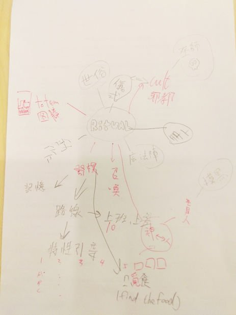
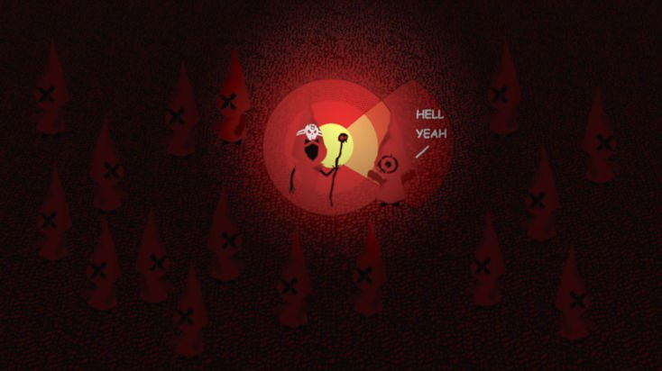

Global Game Jam 2016 概念發表
作品名稱：After Ritual
團隊名稱：Team I
團隊成員
Ted – Project Manager
Peter – Programmer
Ian – Programmer
小白 – Artist
Eddie – Sound & Music
Global Game Jam 2016 Keynote
概念發想
這次的團隊成員中，彼此原先都是不認識的，所以在一開始的遊戲方向上，花費了很多時間討論。但在討論好一段時間後，遊戲構想終於慢慢成行。
這次的 GGJ 主題為 Ritual，所以由 Ritual 為出發點，一開始團隊討論了幾個路線，習慣、魔法陣、召喚、邪教、儀式…等等，而在觀賞 Keynote 影片時，成員中有人對於盲人有一些概念上的發想，所以在一開始的討論中，都將發想核心圍繞在如何表達出盲人的習慣，進而可以透過引導讓盲人到達指定的目的地，但由於發想不出如何引導盲人的形式，所以讓這個主題暫時結束。
接下來又以上班族日常的一個上班日為出發點，為了讓遊戲角色結束他一成不變的生活，玩家必須去思考如何改變遊戲內角色的習慣，讓角色可以改變習慣並且到達新的目的地。但由於概念上有許多衝突，也會讓遊戲事件過多及劇情量過於龐大，所以也將這個主題結束。
後續開始把討論的核心帶回 Ritual 本身的意義，儀式，發想出了在一場特殊的儀式中，玩家需要配合儀式的進行而做出相對應的動作，而因為儀式的目的是篩選出最後一個存活的教徒，玩家必須想辦法陷害別人，而讓自己活下去。

與主題關聯
為了在某個邪教所進行的儀式中存活到最後，而被迫遵循令人匪夷所思的習慣與規則
玩法概念
在這詭異的教派中，教宗是群體中至高無上的存在，一旦被教宗的目光所注視，教徒們便會虔誠的執行（動作1），若是沒有執行（動作1），則會被視為違反教義而即刻死刑。
而這個儀式的最終目的是：篩選出最虔誠的一位信徒。
在遊戲中，教宗會用各種方式來注視信眾們，依造不規則的行動，來測試教徒們的忠誠度，玩家一方面需要不斷觀察教宗的行動，一方面則需要陷害其他教徒，讓其他教徒在教宗前出錯，而達到最後的目的。
在遊戲一開始時，由於所有的教徒都擁有著同樣的外表，所以玩家的首要任務，就是尋找自己，一方面不能冒險做大範圍的測試，一方面則需要仔細觀察玩家角色在遊戲中的位置。
在確認玩家角色的位置後，就可以開始進行干擾其餘教徒的動作，但是要記得，一旦自己被發現不夠虔誠，就會直接失敗。
Prototype 畫面
概念畫面
